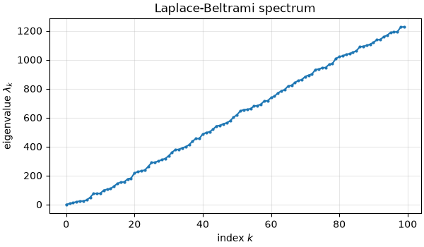
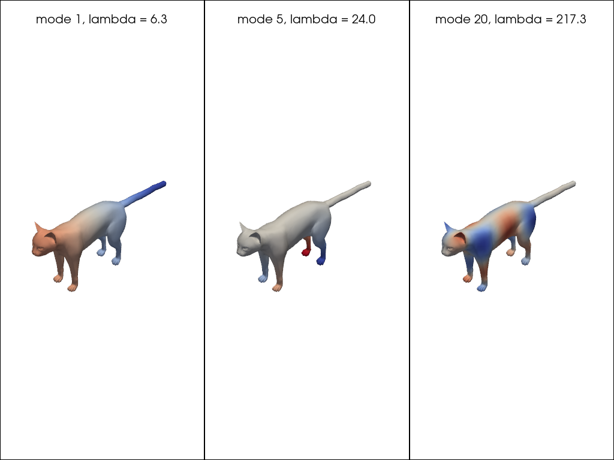
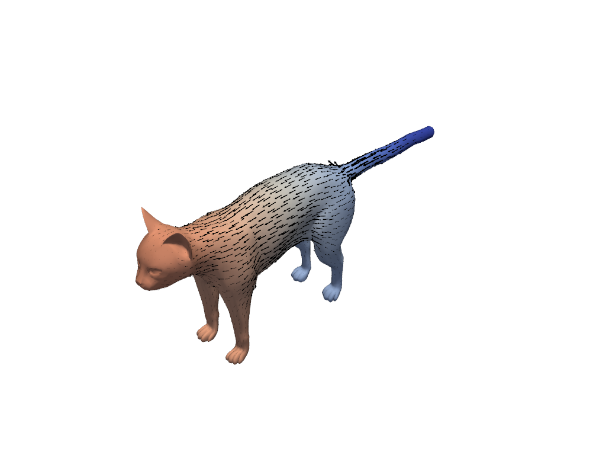
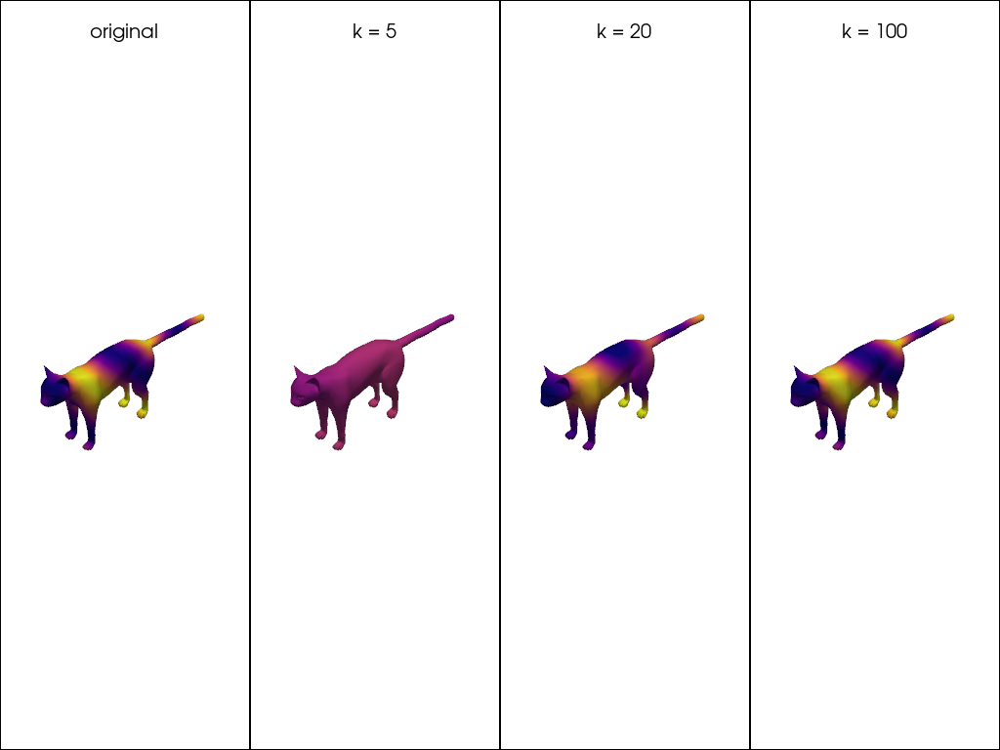
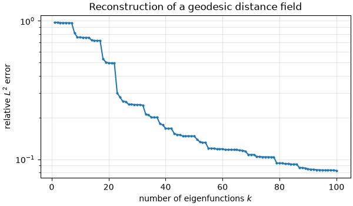
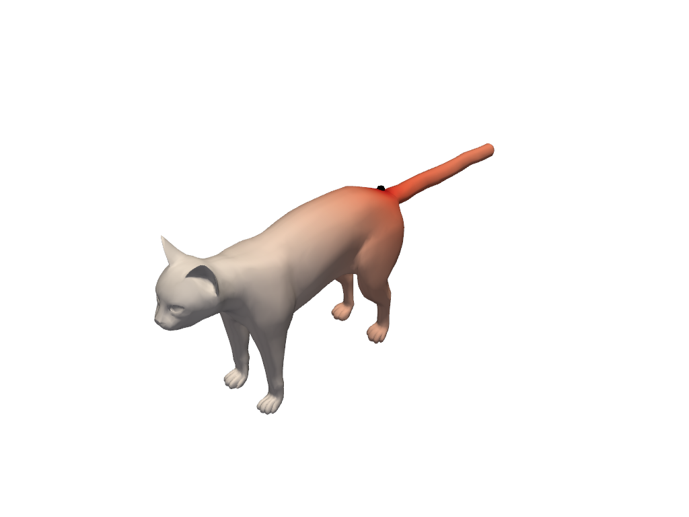
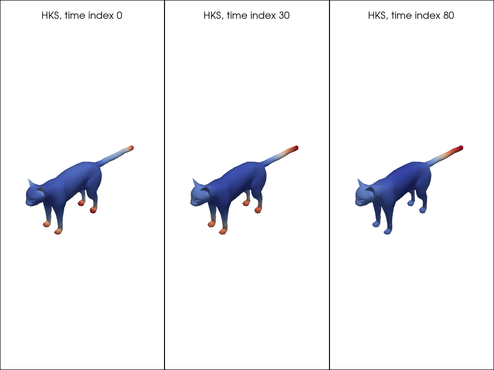
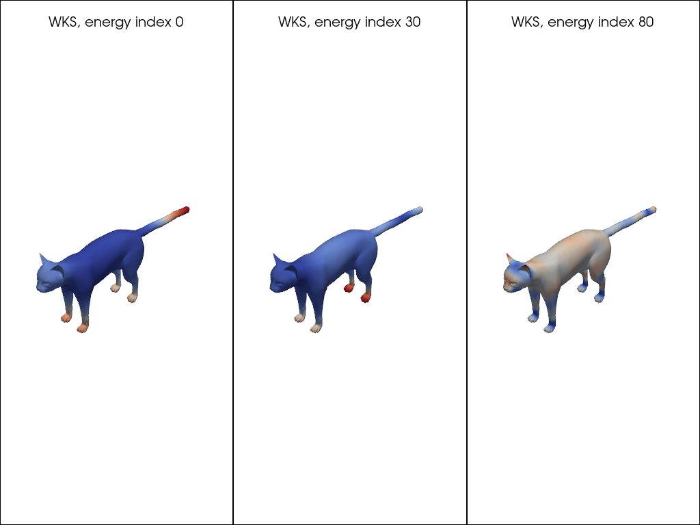

Note
Go to the end to download the full example code.
The Laplacian and its spectrum¶
The Laplace-Beltrami operator is the single object the rest of pyFM is built on. Its eigenfunctions form an orthonormal basis of the functions living on a surface, ordered from the slowest to the fastest varying. Truncating that basis is what turns a correspondence between two shapes into a small matrix called a functional map.
This page builds the operator, looks at its spectrum, differentiates and integrates with it, compresses functions in its basis, and ends on the descriptors that the functional-map examples use as input.
Locating data¶
The example meshes are stored in examples/data and are not part of the package.
from pathlib import Path
import matplotlib.pyplot as plt
import numpy as np
import pyvista as pv
from scipy import sparse
import pyFM.signatures as sg
from pyFM.mesh import TriMesh
from pyFM.viz import plot_mesh
def example_data(name):
"""Return the path to a mesh in the ``examples/data`` folder."""
for folder in [Path.cwd(), *Path.cwd().parents]:
candidate = folder / "examples" / "data" / name
if candidate.exists():
return candidate
raise FileNotFoundError(
f"{name!r} not found. These examples read data from the pyFM repository; "
"clone it and run them there."
)
mesh = TriMesh.load(example_data("cat.obj"), area_normalize=True, center=True)
Building the operator¶
process() discretizes the Laplacian and computes the
first k eigenpairs, storing everything on the mesh object. It returns the mesh itself, so
it chains, and it never recomputes a spectrum it already has (asking for fewer
eigenvectors than are stored simply truncates it).
The discrete Laplacian is usually defined as \(\Delta = A^{-1} W\), where \(W\) is the stiffness matrix and \(A\) is the mass matrix. The eigenproblem is therefore \(W \phi_k = \lambda_k A \phi_k\), which is a generalized eigenproblem. The eigenvectors are orthonormal with respect to the mass matrix, \(\phi^T A \phi_j = \delta_{ij}\).
The default discretization is the standard cotangent scheme. intrinsic=True switches to an
intrinsic triangulation, which ensures positive cotangent weights.
robust=True switches to the tufted Laplacian, which tolerates non-manifold input and works for point clouds.
Using k=0, or
calling compute_operators(), builds the matrices
without solving the eigenproblem.
mesh.process(k=100)
print(f"stiffness: {mesh.stiffness.shape}, {mesh.stiffness.nnz} nonzeros")
print(f"mass : {mesh.mass.shape}, {mesh.mass.nnz} nonzeros")
print(f"eigenvalues : {mesh.eigenvalues.shape}")
print(f"eigenvectors: {mesh.eigenvectors.shape}")
stiffness: (7207, 7207), 50437 nonzeros
mass : (7207, 7207), 7207 nonzeros
eigenvalues : (100,)
eigenvectors: (7207, 100)
The two matrices are available under their full names, stiffness and mass, and
under the short aliases W and A that keep formulas simple.
The mass matrix is the discrete integration weight, so summing it against a constant function recovers the area of the shape.
ones = np.ones(mesh.n_vertices)
print(f"mesh.W is mesh.stiffness: {mesh.W is mesh.stiffness}")
print(f"integral of 1 : {mesh.integrate(ones):.6f}")
print(f"mesh area : {mesh.area:.6f}")
mesh.W is mesh.stiffness: True
integral of 1 : 1.000000
mesh area : 1.000000
The eigenvectors are orthonormal with respect to the mass matrix, not the plain dot
product. That will make project() below a simple
matrix product and not a linear solve.
gram = mesh.eigenvectors.T @ mesh.mass @ mesh.eigenvectors
print(f"max |V^T A V - I| = {np.abs(gram - np.eye(gram.shape[0])).max():.2e}")
max |V^T A V - I| = 4.44e-15
The spectrum¶
The eigenvalues are non-negative and sorted. The first one is zero, with the constant function as eigenvector. Then an eigenvalue is a frequency: the larger it is, the faster its eigenfunction oscillates. This is a generalization of the Fourier basis to curved surfaces, and it is the reason why the span of the first eigenfunctions is used to compress signals.
print(f"lambda_0 = {mesh.eigenvalues[0]:.2e} (zero, up to numerical error)")
print(f"next eigenvalues: {np.round(mesh.eigenvalues[1:5], 4)}")
fig, ax = plt.subplots(figsize=(6, 3.5), constrained_layout=True)
ax.plot(mesh.eigenvalues, ".-", markersize=4)
ax.set_xlabel("index $k$")
ax.set_ylabel(r"eigenvalue $\lambda_k$")
ax.set_title("Laplace-Beltrami spectrum")
ax.grid(alpha=0.3)
plt.show()

lambda_0 = 6.30e-14 (zero, up to numerical error)
next eigenvalues: [ 6.2723 11.9226 18.58 23.4044]
Eigenfunctions¶
Each eigenvector is a function on the vertices, plotted here with a diverging colormap. Note that higher frequency eigenvectors split the mesh into smaller regions.
ev_inds = [1, 5, 20]
pl = pv.Plotter(shape=(1, len(ev_inds)))
for i, ev_ind in enumerate(ev_inds):
pl.subplot(0, i)
evec = mesh.eigenvectors[:, ev_ind]
bound = np.abs(evec).max()
plot_mesh(mesh, scalars=evec, cmap="coolwarm", clim=(-bound, bound), pl=pl)
pl.add_title(f"mode {ev_ind}, lambda = {mesh.eigenvalues[ev_ind]:.1f}", font_size=9)
pl.link_views()
pl.show()

Gradient and divergence¶
gradient() takes a function on the n vertices and
returns a vector field on the m faces: on each triangle the function is linear, so
its gradient is a single vector tangent to that triangle. A constant function
therefore has a strictly zero gradient.
f = mesh.eigenvectors[:, 1]
grad_f = mesh.gradient(f)
print(f"function: {f.shape} (per vertex) -> gradient: {grad_f.shape} (per face)")
print(f"max |gradient of a constant|: {np.abs(mesh.gradient(ones)).max():.2e}")
bound = np.abs(f).max()
plot_mesh(
mesh,
scalars=f,
cmap="coolwarm",
clim=(-bound, bound),
vfield=grad_f,
vfield_rescale=0.01,
vfield_tolerance=0.01,
vfield_color="black",
)

function: (7207,) (per vertex) -> gradient: (14410, 3) (per face)
max |gradient of a constant|: 0.00e+00
divergence() goes from a per-face
vector field back to a function on the vertices. Composing the two gives the Laplacian
itself, \(\Delta = \text{div} \circ \text{grad}\).
We can check this numerically, by verifying \(\text{div}(\text{grad} \, \phi_k) = \lambda_k \phi_k\) for an eigenfunction \(\phi_k\).
Warning
pyFM uses the geometry processing sign convention, where the Laplacian
\(\Delta = A^{-1} W\) has a non-negative spectrum. divergence(gradient(f))
therefore returns \(+\Delta f\), the opposite sign to the usual math convention.
div_grad_f = mesh.divergence(grad_f)
lambda_1 = mesh.eigenvalues[1]
rel_error = np.linalg.norm(div_grad_f - lambda_1 * f) / np.linalg.norm(lambda_1 * f)
print(f"eigenvalue lambda_1 : {lambda_1:.10f}")
print(f"median of div(grad f) / f : {np.median(div_grad_f / f):.10f}")
print(f"relative error on Delta f - lambda f: {rel_error:.2e}")
eigenvalue lambda_1 : 6.2723447940
median of div(grad f) / f : 6.2723447940
relative error on Delta f - lambda f: 2.48e-10
Compressing functions in the spectral basis¶
This is the idea the whole functional map framework rests on. Because the
eigenfunctions form an orthonormal basis,
project() turns a function over the n vertices
into a few coefficients. unproject() turns
them back into values on the surface, and
reconstruct() does both at once.
We generate a function on the surface by transforming a geodesic distance field.
target = np.cos(2 * np.pi * mesh.geodesic_from(200) / 0.5)
coefficients = mesh.project(target)
print(f"function: {target.shape} -> coefficients: {coefficients.shape}")
print(f"first coefficients: {np.round(coefficients[:5], 4)}")
function: (7207,) -> coefficients: (100,)
first coefficients: [-0.1536 -0.0226 -0.0622 0.0329 -0.0046]
Projection turns a function into K coefficients. Higher values of K allow for a more accurate reconstruction, but at the cost of storing more data. We see that this field is hard to reproduce when using too few eigenvectors. However, with 100 coefficients, we are able to reconstruct the function with good accuracy, independently from the number of vertices.
k_values = [5, 20, 100]
clim = (target.min(), target.max())
pl = pv.Plotter(shape=(1, 1 + len(k_values)))
pl.subplot(0, 0)
plot_mesh(mesh, scalars=target, cmap="plasma", clim=clim, pl=pl)
pl.add_title("original", font_size=9)
for i, k in enumerate(k_values):
pl.subplot(0, i + 1)
plot_mesh(mesh, scalars=mesh.reconstruct(target, k=k), cmap="plasma", clim=clim, pl=pl)
pl.add_title(f"k = {k}", font_size=9)
pl.link_views()
pl.show()

l2_sqnorm() measures the error by integrating on the surface (weighting with vertex area)
k_range = np.arange(1, mesh.eigenvalues.size + 1)
errors = [
np.sqrt(mesh.l2_sqnorm(target - mesh.reconstruct(target, k=k)) / mesh.l2_sqnorm(target))
for k in k_range
]
fig, ax = plt.subplots(figsize=(6, 3.5), constrained_layout=True)
ax.semilogy(k_range, errors, ".-", markersize=4)
ax.set_xlabel("number of eigenfunctions $k$")
ax.set_ylabel("relative $L^2$ error")
ax.set_title("Reconstruction of a geodesic distance field")
ax.grid(alpha=0.3, which="both")
plt.show()
print(f"relative L2 error with k = 100: {errors[-1]:.3f}")

relative L2 error with k = 100: 0.083
Diffusing heat¶
Heat spreading over the surface obeys
The minus sign goes with the convention that: \(\Delta = A^{-1} W\) is positive semi-definite. In the spectral basis the equation decouples, and each coefficient simply decays as \(e^{-\lambda_k t}\).
Discretizing the time derivative explicitly (forward Euler) gives
One sparse product per step, but stable only while \(\delta t < 2 / \lambda_{\max}\). Since the largest eigenvalue scales like the inverse squared edge length, this is an issue for badly triangulated shapes, which is why implicit methods are often preferred.
lambda_max = sparse.linalg.eigsh(
mesh.W.tocsc(), k=1, M=mesh.A.tocsc(), which="LM", return_eigenvectors=False
)[0]
print(f"largest eigenvalue: {lambda_max:.2e}")
print(f"explicit steps must satisfy dt < {2 / lambda_max:.2e}")
largest eigenvalue: 3.99e+07
explicit steps must satisfy dt < 5.01e-08
The implicit (backward Euler) step instead solves
which is unconditionally stable.
source = 200
delta = np.zeros(mesh.n_vertices)
delta[source] = 1.0 # this is A @ dirac; the area weight cancels out
diffusion_time = 1e0
heat = sparse.linalg.spsolve(mesh.A + diffusion_time * mesh.W, delta)
print(f"diffusion time: {diffusion_time:.0e}, one linear solve")
print(f"integral of the solution: {mesh.integrate(heat):.4f} (heat is conserved)")
diffusion time: 1e+00, one linear solve
integral of the solution: 1.0000 (heat is conserved)
We plot the solution

Spectral descriptors¶
The Heat and Wave Kernel Signatures are built directly from the spectrum. Both give every vertex a vector of values that describes the geometry around it, and both are isometry invariant: they depend on the surface, not on how it is posed in space. That is what makes them usable to put two different shapes in correspondence.
mesh_HKS() and
mesh_WKS() read the spectrum off an already
processed mesh and pick their own time and energy scales from it.
HKS: (7207, 100), WKS: (7207, 100)
The HKS describes how much heat remains at a vertex after diffusing for a time t.
Short times see only the local curvature, while longer times see larger scales.
time_inds = [0, 30, 80]
pl = pv.Plotter(shape=(1, len(time_inds)))
for i, t_ind in enumerate(time_inds):
pl.subplot(0, i)
plot_mesh(mesh, scalars=hks[:, t_ind], cmap="coolwarm", pl=pl)
pl.add_title(f"HKS, time index {t_ind}", font_size=9)
pl.link_views()
pl.show()

The WKS replaces the diffusion time by an energy band, which makes it more selective: each column responds to one range of frequencies.
energy_inds = [0, 30, 80]
pl = pv.Plotter(shape=(1, len(energy_inds)))
for i, e_ind in enumerate(energy_inds):
pl.subplot(0, i)
plot_mesh(mesh, scalars=wks[:, e_ind], cmap="coolwarm", pl=pl)
pl.add_title(f"WKS, energy index {e_ind}", font_size=9)
pl.link_views()
pl.show()

These are exactly the arrays FunctionalMapping computes when
given descr_type="HKS" or descr_type="WKS": a functional map is optimized so
that it maps the descriptors of one shape onto the descriptors of the other, expressed
in the truncated spectral basis built above.
Total running time of the script: (0 minutes 3.180 seconds)